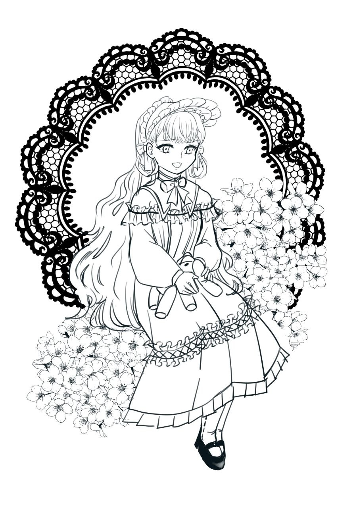

| 角色卡 - Claire |
| 名稱 | Claire |
| 種族 性別 | 不死族 可能是女孩 |
| 年齡 | 不詳 可能上千歲 |
| 身型 | 身高140 體重30kg |
| 職業 | 死靈魔法師 |
| 說話方式 | 腹黑毒舌 |
| 口頭禪 | 我忘了、就這樣吧 |
| 個性 | 對於任何事情不在乎 |
| 信念 | 沒有特別堅持，想到什麼就做什麼 |
| 開場時的缺憾 | 因為都忘了，所以也無所謂了 |
| 故事中的目標 | 召喚大量魔物進攻大陸 |
| 側寫 | 黑色系歌德羅利 使用操偶術 手上的玩偶也能是武器 |
| 簡史 | 不知從哪出現的謎之人物，也沒有之前的記憶，不在乎任何人的請求。
召喚魔物攻打大陸單純是覺得太無聊了找一些事情做， |
| 原型參考 |
發想 - 鍊金系列 – (親女兒)帕梅拉 講話風格：果青 - 雪之下雪乃 外觀：天結 - ロズリーヌ・フラン |
| 形象概念 | 繪師：minu |
 PosetMage
PosetMage